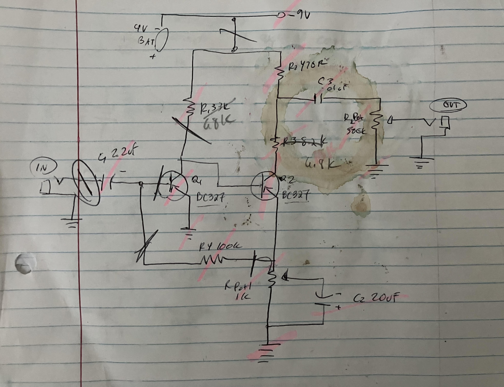
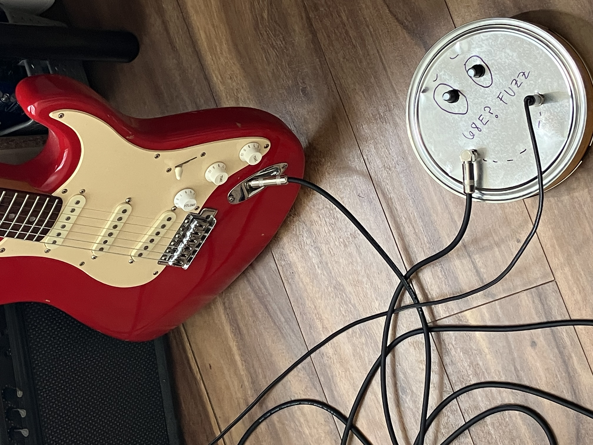

Pedal I: DIY Fuzz Face
Read
My first circuit, my first DIY pedal. . . the "fuzz face" pedal.
I followed the schematic from electrosmash's analysis of the fuzz face pedal.
On hand, I had cheapo silicon components from educational kits, so I substituted the AC128 transistors for silocon BC327's, which worked just fine for my purposes (i.e. to make a pedal that worked...).
I wanted the sound to be "nastier", so I upped the resistance in the circuit, replaced R1-R3 with 6.8eX resistors. Below are the componenets and schematic...
Schematic:

Components:
C1: 2.2 uF
C2: 22 uF
C3: 0.01 uF
R1: 68KΩ
R2: 680Ω
R3: 6.8KΩ
R4: 100KΩ
Rvol: 500KΩ pot
Rfuzz: 1KΩ pot
Q1, Q2: BC327 (PCP... pin order different from AC128, check datasheet)
